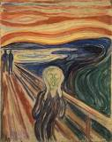
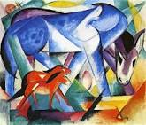
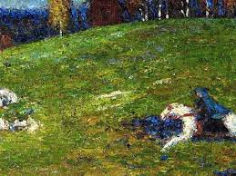
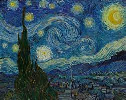

EXPRESSIONISMO
O seu surgimento teve princípio na Alemanha, apesar de ter sido bem diversificado, teve fundamento em dois principais grupos que prioritariamente o criaram: A Ponte, de 1905, e O Cavaleiro Azul, de 1911. O expressionismo é a arte do instinto, trata-se de uma pintura dramática, subjetiva, “expressando” sentimentos humanos. Utilizando cores irreais, dá forma plástica ao amor, ao ciúme, ao medo, à solidão, à miséria humana, à prostituição. Deforma-se a figura, para ressaltar o sentimento. O psíquico é mais importante do que todas as formas e regras de composição (IMBROISI, 2020).
PRINCIPAIS CARACTERÍSTICAS DA FIGURA:
- Pesquisa no domínio psicológico;
- Deformações da figura;
- Cores resplandecentes, vibrantes, fundidas ou separadas;
- Dinamismo improvisado, abrupto, inesperado;
- Pasta grossa, martelada, áspera; • Cores forte e com contraste;
- Técnica violenta: o pincel ou espátula vai e vem, fazendo e refazendo, empastando ou provocando explosões;
- Preferência pelo patético, trágico e sombrio.
Observação: Alguns historiadores determinam para esses pintores o movimento ”Pós-Impressionista”. Os pintores não queriam destruir os efeitos impressionistas, mas queriam levá-los mais longe. Os três primeiros pintores abaixo estão incluídos nessa designação ( IMBROISI, 2020).
PRINCIPAIS OBRAS:
O grito (1893), Edvard Munch considere a mais famosa imagem desse movimento, “O Grito” (1893). A pintura apresenta uma figura humana sem sexo definido num momento de profundo desespero. A angústia não está só no personagem, mas em todas as figuras representadas na tela (Oshio, 2019).
As pinceladas fortes e deformadoras parecem imprimir a cada objeto representado o efeito de um grito de Kandisnky, formou em 1911 o Der Blaue Reiter (O cavaleiro azul), grupo que explorava as características do movimento. O artista pintou uma série de animais ao longo da vida e, especialmente a partir de 1907, começou a insistir ainda mais na representação de animais em plena natureza. Sobre a fixação no tema, em declaração o pintor chegou a afirmar ( Fuks, 2017 ):
“Pessoas com falta de piedade, especialmente homens, nunca tocaram meus verdadeiros sentimentos (...) Mas os animais com seu sentido de vida virginal despertaram tudo o que era bom em mim." ( Fuks, 2017 ).
Na tela vemos diversas características do expressionismo: a pintura em tons vibrantes, a realidade deformada (repare na diferença entre as dimensões dos animais) e o desejo de captar a essência das criaturas que retratava, assim como um caráter emocional. Há também alguns elementos que remetem ao estilo cubista, como a geometrização das formas ( Fuks, 2017 ).
O cavaleiro azul (1903), Wassily Kandinsky A tela O cavaleiro azul foi produzida quando o artista estava no começo de sua carreira. É uma obra importante, pois nela já é possível identificar elementos que fariam parte de sua produção posterior, como a valorização das cores vivas e uma tendência à abstração. Além disso, a tela apresenta uma atmosfera misteriosa e dinâmica ( Fuks, 2017 ).
A composição registra um cavalheiro em ação a partir de uma imagem propositalmente esfumada. Aqui a cena está ligada à ação e ao gesto pleno de energia, que é reforçado também a partir das pinceladas curtas. ( Fuks, 2017 ).
O gramado é pintado em um verde forte, enquanto ao fundo pouco se pode observar da paisagem. Alguns teóricos afirmam que nos braços do cavaleiro há uma criança ( Fuks, 2017 ).
Noite Estrelada (1889) ,Vicent Van Gogh A obra Noite Estrelada foi e ainda é umas das mais conhecidas de Van Gogh, ela descreve a vista na qual Van Gogh observou quando esteve internado em um sanatório. Essa obra é considera uma das mais significativas de Van Gogh (Fuks, 2017).
NOMES IMPORTANTES PARAO EXPRESSIONISMO
Para muitos teóricos, Van Gogh é considerado o precursor do expressionismo, bem como Edvard Munch ( Fuks, 2017 ).
Nomes importantes foram: Karl Schimidt- Rottluff, Franz Marc, Erich Heckel, Ernst Kirchner, Franz Marc e Paul Klee (Fuks, 2017).
REFERÊNCIAS
Fuks, Rebeca;“Expressionismo: principais obras e artistas”. Disponível em: https://brasilescola.uol.com.br/artes/futurismo.htm. Acesso em 21 de Mai 2023.
Oshio, Raquel;“Expressionismo: o que é, características e principais artistas”. Disponivel em: https://vestibulares.estrategia.com/portal/materias/artes/expressionismo/. Acesso em 21 Mar 2023.
IMBROISI, Margaret; MARTINS, Simone;"Expressionismo: História das Artes." 2023. Disponível em: http://www.historiadasartes.com/nomundo/arte-seculo-20/expressionismo/. Acesso em 21 Mar 2023.